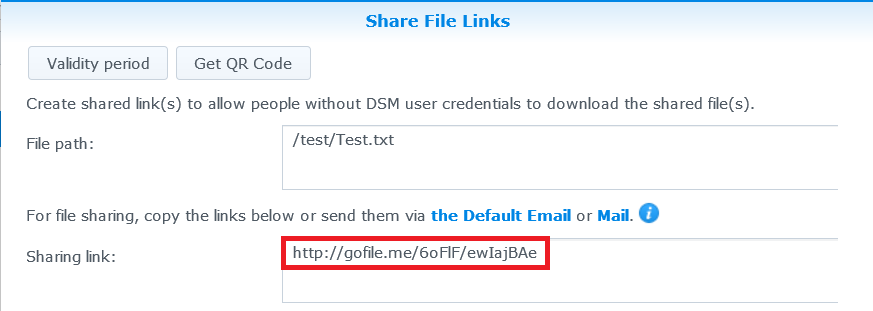

인터넷 및 공유 파일을 통해 Synology NAS에 액세스

개요
QuickConnect를 이용하면 포트 전달 규칙이나 다른 복잡한 네트워크 설정을 구성하는 까다로운 절차없이 인터넷에서 손쉽게 Synology NAS에 연결할 수 있습니다. 또한 Quickconnect.to/example과 같이 간단한 사용자 지정 주소를 통해 연결할 수 있습니다.
1. QuickConnect 설정
- 제어판 > QuickConnect로 이동합니다.
- QuickConnect 활성화 상자를 선택합니다.

- Synology 계정이 없으면 Synology 계정 로그인 또는 등록을 클릭합니다. 필요한 정보를 입력하고 확인을 클릭합니다. 이미 Synology 계정이 있는 경우에는 계정 정보를 입력합니다.

- QuickConnect ID 필드에서 자신만의 QuickConnect ID를 생성합니다. 적용을 클릭합니다.

- QuickConnect 링크 정보가 표시됩니다. 이 링크를 사용하여 Synology NAS에 액세스합니다. 이 예에서 DSM의 주소는 http://Quickconnect.to/YourID입니다.

- QuickConnect DSM 링크가 보이지 않으면 고급을 클릭하고 DSM이 활성화되어 있는지 확인합니다.

- 이제 QuickConnect DSM 링크를 사용하여 Synology NAS에 액세스할 수 있습니다.

2. QuickConnect를 사용하여 NAS에서 파일 공유
QuickConnect가 활성화되어 있으면, 포트 전달에 대한 걱정 없이 Synology NAS에 저장된 파일을 모든 사용자와 쉽게 공유할 수 있습니다.
- 파일을 안전하게 공유하려면 먼저 HTTPS 연결을 활성화합니다. 제어판 > 네트워크로 이동합니다.
- HTTPS 연결 활성화 상자를 선택하고 적용을 클릭합니다.

- 그런 다음 QuickConnect에 대해 파일 공유를 활성화합니다. 제어판 > QuickConnect로 이동합니다.
- 고급을 클릭하고 파일 공유 상자가 선택되어 있는지 확인합니다.

참고:
고급 QuickConnect 설정을 구성할 때 Synology NAS의 도메인 이름이나 로컬 IP 주소를 사용하여 DSM에 로그인하는 것이 좋습니다.
- 이제 QuickConnect를 사용하여 파일 공유를 시작할 수 있습니다. File Station을 열고 공유할 파일 또는 폴더를 마우스 오른쪽 단추로 클릭합니다. 그런 다음 컨텍스트 메뉴에서 파일 링크 공유를 클릭합니다.

- 파일 공유 링크가 생성됩니다. 가족 및 친구와 이 링크를 공유하기만 하면 공유 폴더/파일을 다운로드할 수 있습니다.
